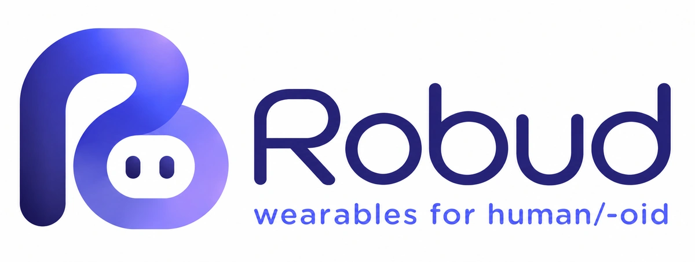
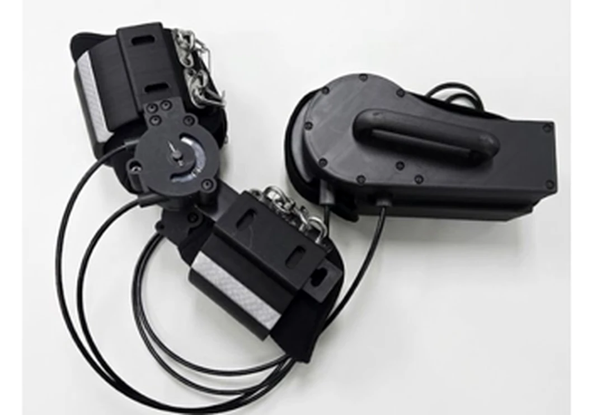

01 / SENSING시제품 구성
센싱 계층
운동 중 발생하는 장치 토크, 위치·속도, 관절 각도와 근전도 신호를 수집하기 위한 하드웨어 구성입니다.

Robud착용형 구동 장치와 센서 데이터를 연결해 운동 중 발생하는 움직임을 기록하고 분석하는 시스템을 개발합니다.

로버드의 이름은 Robot과 Buddy에서 시작합니다. 사람의 움직임을 이해하고, 곁에서 함께하는 로봇 파트너를 만들겠다는 뜻입니다.
우리는 착용 구조, 구동·센싱, 데이터 해석을 연결합니다. 첫 제품 Movel을 통해 운동하는 순간을 이해하고, 사람과 로봇이 더 자연스럽게 상호작용하는 미래를 준비합니다.
좋은 기술은 몸 가까이에서 시작합니다.
착용하고, 감지하고, 이해하는 기술을 하나의 시스템으로 설계합니다.
사용자의 움직임을 고려한 착용 구조와 모듈형 연결을 연구합니다. 몸과 기기가 만나는 지점에서 착용감과 움직임의 자유를 함께 고민합니다.
로버드가 지향하는 기술 개발 방향입니다.
MOVEL은 장치의 센서·구동부에서 시작해 임베디드 제어, 통신, 사용자 화면과 데이터 분석으로 이어지는 구조를 지향합니다.
운동 중 발생하는 장치 토크, 위치·속도, 관절 각도와 근전도 신호를 수집하기 위한 하드웨어 구성입니다.
임베디드 환경에서 센서 데이터를 처리하고 운동 모드와 목표 저항에 따라 구동부를 제어하는 구조를 설계합니다.
최대 토크·속도 제한, 온도·전류 이상 감지, 통신 끊김 시 안전 상태 전환과 비상 정지를 설계 항목으로 관리합니다.
장치와 사용자 화면을 연결하기 위해 BLE와 Wi-Fi 통신 방식을 고려합니다. 실제 펌웨어와의 연동 검증은 별도 단계입니다.
운동 모드 설정, 신호 시각화, 세션 기록과 결과 내보내기를 제공하는 WID Studio 데모를 개발했습니다.
개인별 기록, 센터 관리자 화면, 데이터베이스와 구독형 분석 서비스를 단계적으로 확장하는 방향입니다.
개발 상태는 현재 확보된 자료 기준입니다. 안전 기능, 실제 장치 통신, 분석 알고리즘과 센터용 플랫폼의 완성·검증을 의미하지 않습니다.
착용형 장치와 데이터 분석을 연결하는 로버드의 첫 제품. 운동 중 장치 토크와 관절 움직임을 기록하고, 운동을 더 구체적으로 이해하도록 돕는 시스템을 개발합니다.
가상 데이터로 만든 설명용 화면입니다. 실제 측정값·제품 성능·출시 소프트웨어 화면이 아닙니다.
제품 사양과 제공 기능, 실증 및 공급 일정은 개발·검증 과정에 따라 확정됩니다.
WID Studio는 MOVEL 소프트웨어의 사용 흐름을 확인할 수 있는 데모입니다. 운동 모드와 목표값을 설정하고, 근활성도·토크·관절 각도·각속도 화면과 세션 리포트를 체험할 수 있습니다.
주의: 데모 화면은 시뮬레이션 데이터로 동작합니다. 실제 MOVEL 장치에서 수집한 측정값이나 검증된 운동 분석 결과가 아닙니다. 실물 장치 연결과 안전 제어는 검증 중입니다.
정밀한 움직임 데이터가 필요한 곳.
로버드와 함께 활용 가능성을 검토할 협력 분야입니다.
위 분야는 협력 제안 대상이며, 도입 실적이나 검증된 효능을 의미하지 않습니다.
현재 확보한 하드웨어·소프트웨어 개발 기반과 실제 제품 통합을 위해 남은 검증 과제를 구분해 공개합니다.
착용 모듈과 제어 본체로 구성된 개발 시제품을 보유하고 있습니다.
센싱, 제어, 안전, 통신, 응용·분석, 비즈니스 플랫폼 계층을 구분했습니다.
제공된 개발 자료 기준, 근전도 신호의 엣지 컴퓨팅 처리를 구현했습니다.
운동 설정, 신호 그래프, 세션 기록과 결과 내보내기를 시뮬레이션으로 확인할 수 있습니다.
Wi-Fi·BLE 통신과 실제 센서 데이터 수신, 장치 제어를 연결합니다.
토크·속도·가동 범위 제한, 통신 이상과 비상 정지 대응을 실물 장치에서 검증합니다.
헬스장·PT센터에서 착용 편의성, 운영 흐름과 데이터 활용 가치를 확인합니다.
회원별 데이터 축적, 관리자 기능과 구독형 분석 서비스로 확장합니다.
현재 확보한 개발 자료와 향후 개발·검증 과제를 구분해 표시했습니다. 고객 도입, 임상적 효능 또는 안전성 인증을 의미하지 않습니다.
사람 곁에서 쌓은 기술을,
로봇과 함께하는 미래로.
착용형 기술에서 시작해 인간–로봇 상호작용으로.
로버드가 바라보는 장기적인 연구·개발 방향입니다.
제품 도입 검토부터 실증, 공동연구, 사업 협력까지.
어떤 현장의 움직임을 함께 이해해 볼까요?